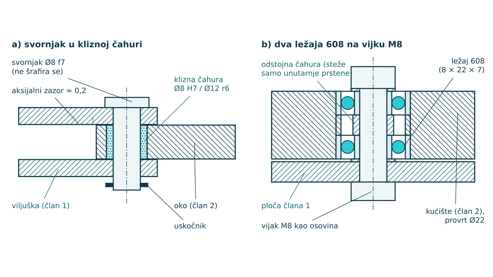
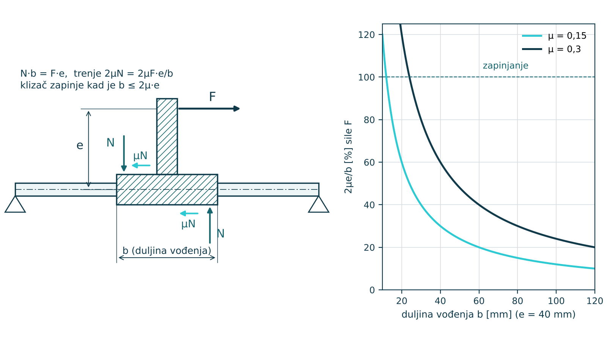

MODUL 8 · KONSTRUIRANJE I SIMULACIJA
Nastavna jedinica 8.1
Konstruiranje zglobova i vodilica: ležajevi, zazori, tolerancije
Kinematička shema pretpostavlja idealne parove: zglob bez zazora i trenja, vodilicu koja vodi točno po pravcu. Stvarni par ima zazor, trenje, elastičnost i trošenje, a upravo oni odlučuju hoće li se mehanizam gibati kao u simulaciji. U ovoj jedinici birate izvedbu rotacijskih i translacijskih parova, dosjede i duljinu vođenja.
- odabrati izvedbu rotacijskog para (svornjak u čahuri, valjni ležajevi, vijak kao osovina) prema opterećenju i točnosti
- odabrati dosjed svornjaka i provrta i izračunati najmanji i najveći zazor prema ISO 286
- procijeniti utjecaj zazora i duljine uležištenja na točnost položaja radnog člana
- aksijalno osigurati članove uskočnikom, odstojnom čahurom ili samokočnom maticom
- provjeriti duljinu klizne vodilice na zapinjanje (učinak ladice)
- prepoznati pasivne veze u konstrukciji i predvidjeti zglob koji podnosi nesaosnost
Od idealnog para do stvarnog zgloba
U shemi je rotacijski par kružić, a translacijski pravokutnik na vodilici. U konstrukciji svaki par mora prenijeti silu, dopustiti gibanje uz malo trenja i ograničiti sve ostale pomake. Rotacijski par (5. reda, f = 1) mora spriječiti dva radijalna pomaka, aksijalni pomak i dva nagiba osi. Ako nešto od toga nije osigurano, zglob „klima“ i mehanizam dobiva lažne stupnjeve slobode.
- Nosivost — par mora podnijeti najveću silu iz kinetostatike (jedinica 5.1) uz dopušteni tlak ili nosivost ležaja.
- Točnost — zazor se preslikava na položaj radnog člana; kod prihvatnice ili steznog mehanizma važniji je od trenja.
- Trenje i trošenje — određuju pogonski moment i vijek; klizni parovi trebaju mazivo ili samopodmazujući materijal.
- Izrada i montaža — dio se mora moći izraditi dostupnim postupkom (tokarenje, 3D ispis, laser) te sastaviti i rastaviti.
- Cijena — kupovni dijelovi (ležaj 608, svornjak ISO 2341, uskočnik DIN 471) gotovo su uvijek jeftiniji od posebno izrađenih.
Izvedbe rotacijskih parova
Klizni zglob sa svornjakom je najjednostavniji, krut i otporan na udare. Svornjak prolazi kroz viljušku jednog i oko drugog člana. U oko se utisne klizna čahura od bronce, sinterirane bronce s uljem ili polimera (POM, PTFE kompoziti), pa se troši zamjenjiva čahura, a ne član. Svornjak se aksijalno osigura uskočnikom ili rascjepkom.
Zglob s valjnim ležajevima ima malo trenje i gotovo nema zazora. U prototipovima se najčešće koristi ležaj 608 (8 × 22 × 7 mm), koji se proizvodi u golemim serijama i jeftin je; za manje sile 625 (5 × 16 × 5) i 623 (3 × 10 × 4). Jedan ležaj slabo drži nagib osi, zato se stavljaju dva na razmaku, a odstojna čahura između unutarnjih prstena omogućuje da ih vijak stegne bez opterećivanja kuglica.

U prototipovima i napravama osovinu često zamjenjuje vijak M3–M8. Navoj ne smije biti nosiva površina: rotirajući član treba nositi glatki dio vijka ili čahura, inače navoj radi kao turpija i zazor brzo raste. Za ozbiljniju primjenu postoje vijci s glatkim cilindričnim dodatkom (ISO 7379), koji su točna osovina i vijak u jednom.
Dosjedi i zazori
Dosjed određuje zazor između svornjaka i provrta. Prema ISO 286 provrt se najčešće izrađuje u polju H7 (donje odstupanje 0), a polje svornjaka bira se prema funkciji. Najmanji zazor je donja granica provrta minus gornja granica svornjaka, a najveći gornja granica provrta minus donja granica svornjaka. Negativan zazor je prijeklop. Za Ø8 (područje 6–10 mm) vrijedi IT6 = 9 µm i IT7 = 15 µm.
| Dosjed Ø8 | Svornjak (gornje / donje) | Zazor najmanji / najveći | Primjena |
|---|---|---|---|
| H7/f7 | −13 / −28 µm | 13 / 43 µm | podmazani zglob, svornjak u čahuri |
| H7/g6 | −5 / −14 µm | 5 / 29 µm | točan zglob s malim zazorom, vodeći zatik |
| H7/h6 | 0 / −9 µm | 0 / 24 µm | klizni dosjed za montažu i centriranje |
| H7/k6 | +10 / +1 µm | −10 / 14 µm | prijelazni: glavine, zatici za položaj |
| H7/n6 | +19 / +10 µm | −19 / 5 µm | utisnuta čahura ili zatik |
Valjni ležaj ima vlastita odstupanja (provrt unutarnjeg prstena je samo u minusu), pa se njegovi dosjedi uzimaju iz kataloga proizvođača: uz opterećenje koje rotira s unutarnjim prstenom osovina je tipično j6 ili k6, a provrt kućišta H7. Kod 3D ispisanih dijelova tablice ISO 286 ne vrijede — tamo mjere daje kalibracijski ispis (jedinica 8.2).
Utjecaj zazora na točnost
Zazor s (razlika promjera) dopušta da se središte svornjaka pomakne za s/2 u svakom smjeru, a kod četverokuta s četiri zgloba ti se pomaci u najnepovoljnijem slučaju zbrajaju na radnom članu. Još je opasniji nagib osi: ako svornjak nosi kratko uležištenje duljine L_u, os se može nagnuti za kut γ, a točka udaljena l od zgloba pomakne se okomito na ravninu gibanja za Δ.
γ ≈ s / L_u
Δ = l · γ ≈ l · s / L_u
U izrazima je s zazor u milimetrima, L_u duljina uležištenja (debljina oka ili razmak ležajeva), l udaljenost promatrane točke od zgloba, a γ je u radijanima. Pomak raste s duljinom člana, a pada s duljinom uležištenja.
| Zazor s | L_u | γ | Δ pri l = 60 mm |
|---|---|---|---|
| 0,3 mm (ispisani provrt) | 6 mm | 2,86° | 3,0 mm |
| 0,3 mm | 20 mm | 0,86° | 0,9 mm |
| 0,03 mm (H7/f7, tokareno) | 6 mm | 0,29° | 0,3 mm |
| 0,03 mm | 20 mm | 0,086° | 0,09 mm |
Primjer
Prst paralelne prihvatnice za IRB 120 dug je 60 mm, zglob mu je ispisan bez dorade provrta (zazor 0,3 mm), a član je debeo 6 mm. Vrh prsta može otkloniti 3 mm iz ravnine, pa hvat malog dijela postaje nepouzdan. S uležištenjem od 20 mm (dva ležaja ili duga čahura) otklon pada na 0,9 mm, a s tokarenim svornjakom H7/f7 na 0,09 mm. Pravilo: duljina uležištenja barem 1,5–2 promjera svornjaka.
Aksijalno osiguranje i pasivne veze
- Uskočnik (DIN 471 za osovine, DIN 472 za provrte) — jeftin, traži utor, ne nosi velike aksijalne sile.
- Rascjepka ili zatik kroz svornjak — brza montaža za grube zglobove.
- Samokočna matica s poliamidnim umetkom — kad je osovina vijak; pritegne se tako da ostane aksijalni zazor 0,1–0,3 mm i zglob se slobodno okreće.
- Odstojna čahura i podloške — određuju razmak ravnina članova i sprječavaju da se članovi taru plohama.
Pasivne veze iz jedinice 1.5 u konstrukciji se pojavljuju kao statička neodređenost. Ravninski četverokut s četiri kruta rotacijska para giba se samo ako su sve četiri osi točno usporedne; svaka pogreška izrade savija članove i zaglavljuje zglobove. Zato se jedan zglob izvodi s većim aksijalnim i radijalnim zazorom ili kao kuglasti zglob (zglobna glava), pa mehanizam podnosi nesaosnost. Isto vrijedi u simulaciji, gdje se to zove redundantne veze (jedinica 8.3).
Translacijski parovi i vodilice
Vodilica mora voditi klizač po pravcu i spriječiti njegov zakret. U manjim uređajima koriste se okrugle kaljene vodilice (Ø8–Ø12 h6) s kliznim ili kugličnim linearnim čahurama (npr. LM8UU), profilne vodilice s kolicima (npr. MGN12) i klizne vodilice od polimera po aluminijskom profilu. Klipnjača pneumatskog cilindra ne smije nositi poprečne sile; za to se dodaju vodeće šipke.
Najčešća pogreška kod kliznih vodilica je prekratko vođenje. Ako pogonska sila F djeluje na kraku e od osi vodilice, klizač se nastoji zakrenuti i naliježe na krajevima duljine vođenja b. Normalne sile N = F · e/b stvaraju trenje 2μN, a klizač zapinje (učinak ladice) kada trenje nadvlada pogonsku silu. Uvjet da se klizač giba je
b > 2 · μ · e
Za μ = 0,3 (polimer po aluminiju, bez maziva) i e = 40 mm najmanja duljina je 24 mm, ali tada gotovo sva sila odlazi na trenje. Uz b = 60 mm trenje uzima 40 % sile, a uz b = 100 mm 24 %. Duljina vođenja bira se barem dvostruko veća od najmanje, i ne manja od 1,5–2 promjera vodilice, a sila se dovodi što bliže osi vodilice.

U simulaciji
U Pythonu nacrtajte udio 2μe/b za svoju vodilicu i nađite najmanji b uz koji trenje uzima manje od 30 % sile. U SolidWorks Motion Analysisu isti klizač zadajte kontaktom s trenjem (Contact, Friction) umjesto veze i usporedite potrebnu silu pogona za kratku i dugu vodilicu.
Ključni pojmovi
| Pojam | Značenje |
|---|---|
| klizna čahura | zamjenjivi umetak od bronce ili polimera u oku člana po kojem klizi svornjak |
| ležaj 608 | kuglični ležaj 8 × 22 × 7 mm, najčešći kupovni ležaj u prototipovima |
| dosjed | odnos tolerancijskih polja provrta i osovine koji određuje zazor ili prijeklop |
| zazor | pozitivna razlika promjera provrta i osovine |
| prijeklop | negativni zazor; osovina je veća od provrta i spoj se utiskuje |
| duljina uležištenja | duljina na kojoj svornjak naliježe u provrt ili razmak dvaju ležajeva |
| uskočnik | elastični prsten u utoru osovine ili provrta koji aksijalno osigurava dio |
| učinak ladice | zapinjanje klizača kad je duljina vođenja premala u odnosu na krak sile, b ≤ 2μe |
| vijak s cilindričnim dodatkom | vijak s brušenim glatkim dijelom koji služi kao osovina zgloba (ISO 7379) |
Provjeri se
Kratka provjera prije prelaska na sljedeću jedinicu. Odgovor se potvrđuje klikom, a obrazloženje se prikazuje odmah.
Pitanje 1 od 4
Koliki je najveći zazor dosjeda Ø8 H7/g6?
Gornja granica provrta +15 µm minus donja granica svornjaka −14 µm daje 29 µm.
Pitanje 2 od 4
Zašto se između dvaju ležajeva 608 na vijku stavlja odstojna čahura uz unutarnje prstene?
Čahura preuzima silu pritezanja vijka, pa unutarnji prsteni i čahura čine kruti paket, a kuglice ostaju neopterećene.
Pitanje 3 od 4
Klizač s krakom sile e = 50 mm i μ = 0,2 zapinje ako je duljina vođenja manja od:
b > 2 · μ · e = 2 · 0,2 · 50 = 20 mm.
Pitanje 4 od 4
Što se događa s otklonom vrha prsta prihvatnice ako se duljina uležištenja udvostruči uz isti zazor?
Δ ≈ l · s / L_u, pa je otklon obrnuto razmjeran duljini uležištenja.
Odgovoreno 0 od 4.